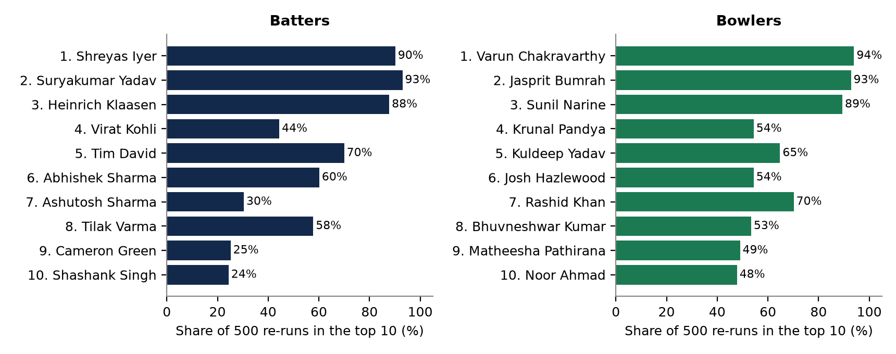
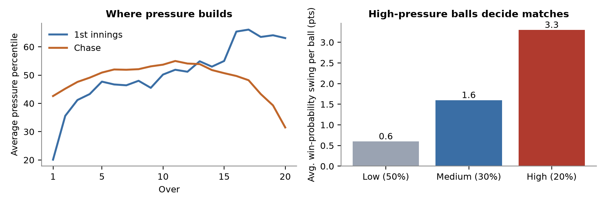
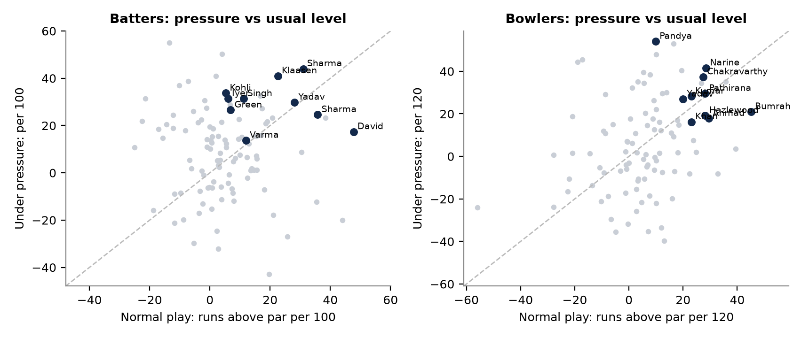

SupeRR Selector Season 2 · Round 1 methodology report
Rank 1–10 as submitted, ordered by Pressure Rating. Top-10 odds is how often the player makes the top 10 across 500 re-runs with every setting redrawn and matches resampled; it decides who is in the list (section 6). Rating rank is the player's position on the Pressure Rating alone. Value is runs above an average player in the same pressure situations, per 100 balls (batting) or 120 balls (bowling), after all adjustments.
| # | Batter | Role | Top-10 odds | Rating rank | Pressure balls (IPL share) | Pressure SR (expected) | Value /100 |
|---|---|---|---|---|---|---|---|
| 1 | Shreyas Iyer | Top order | 90% | 1 | 416 (75%) | 167.5 (153.5) | +10.8 |
| 2 | Suryakumar Yadav | Top order | 93% | 2 | 568 (59%) | 162.9 (146.0) | +12.9 |
| 3 | Heinrich Klaasen | Middle order | 88% | 3 | 298 (83%) | 169.8 (147.0) | +12.1 |
| 4 | Virat Kohli | Opener | 44% | 4 | 301 (82%) | 162.1 (156.0) | +9.4 |
| 5 | Tim David | Middle order | 70% | 5 | 436 (53%) | 165.1 (143.5) | +9.0 |
| 6 | Abhishek Sharma | Opener | 60% | 6 | 207 (74%) | 187.4 (160.2) | +9.2 |
| 7 | Ashutosh Sharma | Finisher | 30% | 7 | 128 (100%) | 166.4 (148.4) | +8.1 |
| 8 | Tilak Varma | Middle order | 58% | 8 | 673 (57%) | 143.7 (143.4) | +7.3 |
| 9 | Cameron Green | Top order | 25% | 9 | 269 (57%) | 161.3 (142.5) | +7.2 |
| 10 | Shashank Singh | Middle order | 24% | 12 | 145 (100%) | 172.4 (156.7) | +6.6 |
Next: Nicholas Pooran (27%), Rovman Powell (27%), Andre Russell (21%).
| # | Bowler | Role | Top-10 odds | Rating rank | Pressure balls (IPL share) | Pressure economy (expected) | Value /120 |
|---|---|---|---|---|---|---|---|
| 1 | Varun Chakravarthy | Middle overs · spin | 94% | 1 | 483 (63%) | 6.99 (7.69) | +24.3 |
| 2 | Jasprit Bumrah | Powerplay & death · pace | 93% | 2 | 375 (79%) | 8.03 (9.11) | +31.2 |
| 3 | Sunil Narine | Middle overs · spin | 89% | 3 | 340 (100%) | 6.34 (7.73) | +22.5 |
| 4 | Krunal Pandya | Middle overs · spin | 54% | 4 | 275 (100%) | 6.39 (7.82) | +11.5 |
| 5 | Kuldeep Yadav | Middle overs · spin | 65% | 5 | 463 (74%) | 7.96 (8.43) | +16.7 |
| 6 | Josh Hazlewood | Powerplay · pace | 54% | 6 | 295 (72%) | 8.68 (9.22) | +19.3 |
| 7 | Rashid Khan | Middle overs · spin | 70% | 7 | 645 (61%) | 7.38 (7.90) | +18.6 |
| 8 | Bhuvneshwar Kumar | Powerplay & death · pace | 53% | 8 | 374 (77%) | 9.56 (10.14) | +19.8 |
| 9 | Matheesha Pathirana | Death & middle overs · pace | 49% | 9 | 282 (67%) | 9.40 (10.43) | +17.8 |
| 10 | Noor Ahmad | Middle overs · spin | 48% | 10 | 363 (66%) | 8.31 (8.42) | +19.7 |
Next: Mustafizur Rahman (23%), Axar Patel (21%), Mitchell Santner (21%).

Figure 1. How sure each pick is: share of 500 re-runs (all settings redrawn, matches resampled) in which the player made the top 10.
A delivery is high-pressure when the result hangs on it (stakes) and the situation is hard (stress). Neither alone is enough. Stakes alone misses a first-innings collapse: a win-probability model sees 30/5 as nearly decided. Stress alone rates hopeless chases as maximum pressure, although nobody's result depends on them.
Two gradient-boosted win-probability models, one per innings, estimate P(batting side wins) from runs, wickets in hand, balls left, required rate and competition. They have monotonic constraints and are validated out of sample, grouped by match: AUC 0.68 for innings 1 and 0.90 for innings 2. For each delivery, leverage is the expected absolute change in win probability over all possible outcomes (dot, 1, 2, 3, 4, 6, wicket, extra), weighted by how often each happens, and scaled so that the average delivery is 1.0. The same number applies to batter and bowler.
Chase: (0.50·difficulty + 0.30·wickets lost + 0.20·recent collapse) × alive × (0.4 + 0.6·stage). Here difficulty rises from a required rate of 6 to 12, and alive fades to 0 as the required rate climbs from 13 to 18, so lost causes are not pressure. First innings: 0.8 × (0.40·wickets lost beyond par for the over + 0.30·recent collapse + 0.30·stage), where recent collapse = wickets in the last 24 balls ÷ 3.
pressure score = (0.65 × percentile(stakes) + 0.35 × percentile(stress)) × 1.15 in knockouts. The top 20% of deliveries are high pressure. Stakes gets the larger weight because it is measured from data rather than assumed.
Evidence that it separates pressure from ordinary play:

Figure 2. Left: average pressure percentile by over. Right: average realised win-probability swing per ball in each pressure band.
Raw strike rate and economy mostly reflect role: a death-overs hitter always scores faster, and a death bowler always concedes more. So for every delivery we model what an average player would do in exactly that situation, and credit the difference.
(runs − expected) − (out − P(out)) × wicket value. Bowling: (expected conceded − conceded) + (wicket − P(wicket)) × wicket value.Five components, each turned into a z-score within the ranking pool, combined with weights:
| Component | What it measures | Batters | Bowlers |
|---|---|---|---|
| Value | Runs above par per 100/120 pressure balls, after all adjustments | 53.75% | 55.0% |
| Consistency | Weighted share of pressure matches in which the player beat an average player (10-match prior) | 23.75% | 5.0% |
| Clutch | Pressure value minus own baseline, shrunk using both standard errors | 0.0% | 15.0% |
| Win impact | Win probability added in pressure moments | 17.5% | 15.0% |
| Track record | Log of weighted pressure balls (a small bonus for sustaining a level) | 5.0% | 10.0% |
A data-driven rule for clutch. If players differ in rising above their usual level, the spread of their pressure-minus-baseline gaps should be wider than chance alone produces. For bowlers it is: observed variance 1,668 vs 1,541 from noise, so clutch keeps its weight. For batters it is not: 1,184 vs 1,333, so its weight is shared out to the other components. Ranking batters on that gap would mean ranking luck.
The brief asks how players perform under pressure compared with their usual level. We measured this for every player. Among batters, 2 of 105 clearly rise and 5 clearly dip (more than 2 standard errors). Among bowlers, 3 of 96 rise and 1 dip. Chance alone would produce about 5 such cases in a group this size. For bowlers a small real effect exists and the rating rewards it. For batters, rising above one's usual level cannot be told apart from luck, so the batting list ranks the most reliable pressure performance: a high level when it matters, sustained across matches, with no evidence of dipping. No player whose pressure performance is clearly below their own usual level (z < −2) can be selected. In the final lists no pick dips significantly.
| # | Player | Normal | Pressure | Gap | z | Beat par in | Pressure balls 24/25/26 | Best pressure match |
|---|---|---|---|---|---|---|---|---|
| 1 | Shreyas Iyer | +6.0 | +31.4 | +25.4 | +1.8 | 89% of 23 | 29 / 87 / 190 | Punjab Kings v Mumbai Indians, IPL 2025 (2025-06-01) [26.2 runs] |
| 2 | Suryakumar Yadav | +28.1 | +29.8 | +1.7 | +0.1 | 68% of 40 | 66 / 99 / 41 | Mumbai Indians v Sunrisers Hyderabad, IPL 2024 (2024-05-06) [24.3 runs] |
| 3 | Heinrich Klaasen | +22.6 | +41.0 | +18.4 | +1.1 | 80% of 19 | 63 / 25 / 82 | Mumbai Indians v Sunrisers Hyderabad, IPL 2026 (2026-04-29) [24.4 runs] |
| 4 | Virat Kohli | +5.3 | +33.7 | +28.4 | +1.8 | 82% of 16 | 62 / 84 / 55 | Royal Challengers Bengaluru v Gujarat Titans, IPL 2026 (2026-04-24) [19.2 runs] |
| 5 | Tim David | +47.7 | +17.4 | −30.3 | −1.9 | 73% of 34 | 63 / 112 / 23 | West Indies v Australia, Australia in West Indies T20I Series 2025 (2025-07-25) [31.7 runs] |
| 6 | Abhishek Sharma | +35.8 | +24.6 | −11.2 | −0.6 | 80% of 14 | 34 / 70 / 57 | Sunrisers Hyderabad v Punjab Kings, IPL 2025 (2025-04-12) [17.7 runs] |
| 7 | Ashutosh Sharma | +31.0 | +44.0 | +13.0 | +0.4 | 74% of 12 | 49 / 47 / 32 | Delhi Capitals v Lucknow Super Giants, IPL 2025 (2025-03-24) [28.5 runs] |
| 8 | Tilak Varma | +11.9 | +13.7 | +1.8 | +0.2 | 57% of 44 | 91 / 216 / 140 | Punjab Kings v Mumbai Indians, IPL 2026 (2026-05-14) [23.6 runs] |
| 9 | Cameron Green | +6.9 | +26.5 | +19.7 | +1.1 | 80% of 20 | 52 / 61 / 57 | Mumbai Indians v Sunrisers Hyderabad, IPL 2023 (2023-05-21) [24.2 runs] |
| 10 | Shashank Singh | +11.1 | +31.4 | +20.2 | +0.8 | 82% of 12 | 68 / 59 / 9 | Kolkata Knight Riders v Punjab Kings, IPL 2024 (2024-04-26) [15.4 runs] |
| # | Player | Normal | Pressure | Gap | z | Beat par in | Pressure balls 24/25/26 | Best pressure match |
|---|---|---|---|---|---|---|---|---|
| 1 | Varun Chakravarthy | +27.4 | +37.3 | +10.0 | +0.6 | 61% of 38 | 117 / 176 / 69 | Punjab Kings v Kolkata Knight Riders, IPL 2025 (2025-04-15) [25.5 runs] |
| 2 | Jasprit Bumrah | +45.1 | +21.0 | −24.1 | −1.4 | 53% of 31 | 45 / 141 / 85 | Punjab Kings v Mumbai Indians, IPL 2024 (2024-04-18) [19.8 runs] |
| 3 | Sunil Narine | +28.5 | +41.5 | +13.1 | +0.7 | 52% of 24 | 88 / 56 / 60 | Kolkata Knight Riders v Sunrisers Hyderabad, IPL 2024 (2024-03-23) [17.0 runs] |
| 4 | Krunal Pandya | +9.9 | +54.0 | +44.1 | +2.1 | 79% of 18 | 52 / 79 / 41 | Lucknow Super Giants v Gujarat Titans, IPL 2024 (2024-04-07) [29.5 runs] |
| 5 | Kuldeep Yadav | +20.0 | +26.9 | +6.9 | +0.4 | 64% of 33 | 68 / 154 / 93 | Punjab Kings v Delhi Capitals, IPL 2022 (2022-05-16) [27.6 runs] |
| 6 | Josh Hazlewood | +28.2 | +19.2 | −9.0 | −0.5 | 67% of 21 | 5 / 94 / 68 | Royal Challengers Bengaluru v Rajasthan Royals, IPL 2025 (2025-04-24) [23.2 runs] |
| 7 | Rashid Khan | +23.1 | +16.2 | −6.8 | −0.5 | 48% of 40 | 110 / 127 / 72 | Afghanistan v Ireland, Afghanistan v Ireland T20I Series 2024 (2024-03-17) [24.1 runs] |
| 8 | Bhuvneshwar Kumar | +23.1 | +28.3 | +5.2 | +0.3 | 51% of 29 | 50 / 80 / 56 | Royal Challengers Bengaluru v Delhi Capitals, IPL 2026 (2026-04-18) [29.0 runs] |
| 9 | Matheesha Pathirana | +28.1 | +29.6 | +1.4 | +0.1 | 76% of 22 | 101 / 77 / 20 | Chennai Super Kings v Lucknow Super Giants, IPL 2024 (2024-04-23) [17.4 runs] |
| 10 | Noor Ahmad | +29.5 | +17.8 | −11.7 | −0.6 | 52% of 30 | 59 / 140 / 88 | Zimbabwe v Afghanistan, Afghanistan in Zimbabwe T20I Series 2022 (2022-06-14) [40.9 runs] |
Normal and Pressure are runs above par per 100 balls (batting) or 120 (bowling), opposition-adjusted and recency-weighted. The z column is the gap in standard errors.

Figure 3. Every ranked player's normal level (x) against their pressure level (y); the final top 10 are labelled. Above the diagonal = better under pressure.
A single rating rests on many judgement calls, so the final lists are built to be robust to all of them at once. In each of 500 re-runs we redraw every setting within a sensible range and resample the matches, then re-rate everyone. The settings are:
A player's share of re-runs in the top 10 is their robust probability. The submitted lists:
Ranking 1–10. The robust probability decides who is in each list: how sure we are that a player belongs in the top 10. The Pressure Rating decides the order: how well they perform under pressure. Rank 1 is therefore the highest-rated player, as the brief asks. The two orders agree closely (rank correlation about 0.9 within each final ten).
The 18 one-at-a-time variants below show how many of the rating's top 10 survive each alternative choice. The adjustments we added move at most one or two names.
| Alternative | Batters kept (of 10) | Bowlers kept (of 10) |
|---|---|---|
| 50/50 stakes/stress | 7 | 9 |
| Evidence weights: all factors twice as strong | 8 | 10 |
| Evidence weights: no IPL tilt | 10 | 10 |
| Evidence weights: no evidence weighting (every ball equal) | 8 | 10 |
| Evidence weights: no opponent factor | 10 | 9 |
| Evidence weights: no recency factor | 10 | 10 |
| Evidence weights: recency only | 9 | 9 |
| No knockout boost | 9 | 10 |
| Stakes (leverage) only | 8 | 9 |
| Top 15% = high pressure | 9 | 9 |
| Top 25% = high pressure | 7 | 9 |
| Rating weights: equal weights | 9 | 6 |
| Rating weights: no consistency | 9 | 9 |
| Rating weights: no impact | 8 | 8 |
| Rating weights: no recent-data nerf | 10 | 9 |
| Rating weights: no track-record bonus | 10 | 9 |
| Rating weights: value + consistency | 8 | 8 |
| Rating weights: value only | 9 | 9 |
For five cut-off dates in 2024–26, predictors were computed from earlier matches and compared with the next 12 months, for the same players. The figures are correlations with next-year context-adjusted pressure value:
| Predictor | Batters | Bowlers |
|---|---|---|
| Pressure Rating (full method) | -0.09 | +0.28 |
| Value component | -0.10 | +0.33 |
| Pressure strike rate / economy | +0.01 | +0.21 |
| Overall strike rate / economy | -0.12 | +0.33 |
Bowlers: our value measure forecasts next-year pressure performance as well as or better than any simple stat, and its top-10 picks did best the following year. Batters: nothing forecasts pressure batting, simple stats included. The batting list therefore states who has delivered most reliably under pressure in 2022–26; it is not a forecast.
All code is in Python. Run the scripts in order, from the project root:
build_phase1.py: match state.build_phase2.py: pressure.build_phase3.py: expectations and values.build_phase4.py: season par, opposition, evidence weights and shrinkage.build_phase5.py: rating.build_phase6.py: reliability.build_phase7.py: robustness re-runs.benchmark_check.py, roles.py, final_selection.py.Every setting is a named constant in fairness.py, rating.py or final_selection.py. An interactive dashboard (dashboard.html) shows every player's full profile.